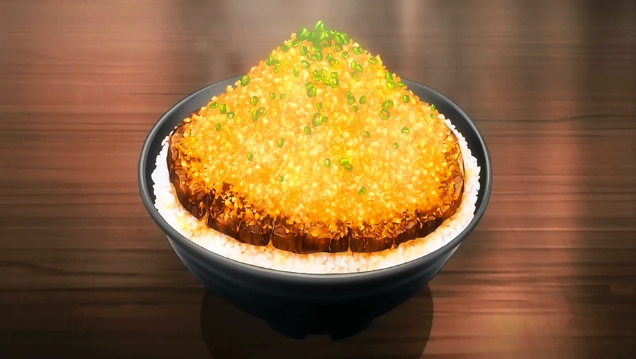

Chaliapin Steak Don

Description
The dish is exclusively made by Soma combined with the
Japanese original dish, the Chaliapin Steak and the donburi
concept for his first Shokugeki. Although the dish was made
with cheap ingredients that can be found in a supermarket,
the dish focused on both innovation and balance of the ingredients
to fulfill the donburi mantra, "Dons are completed in one bowl."
Ingredients
- Beef Siroin
- Onion
- Garlic
- Pepper
- Salt
- Potato Starch
- RIce
- Umeboshi Paste
- PIckled Plum
Sauce
- Red Wine
- Soy Sauce
- Butter
Steps
- Chop the onions finely.
- Remove the tendons from the beef and beat it with a meat
tenderizer until as flat as possible.
- Cover meat on both sides with the chopped onion and leave for
30 minutes or more. Remove the onion and add salt and pepper.
- Cook the steak to your preference(most would prefer medium-rare).
Remove from heat and melt 1 tablespoon of butter in a frying pan
and fry the onion used for the beef until it changes color.
Adjust the flavor with salt and pepper, then move
the onion to the steak.
- Melt the remaining butter in the frying pan and fry the sides
of the meat before taking it out.
- Put rice mixed with Umeboshi paste (pickled plum) in the donburi bowl.
Place the beef on top and add plenty of sauce.
Top with the finely chopped, cooked onions.
Making the Sauce:
- Add red wine to the frying pan used for the beef to deglaze it.
Boil down the wine while scraping off the meat juice.
- Add soy sauce and mix with everything. Adjust seasonings
to personal preferences.
- Thicken with dissolved potato starch.